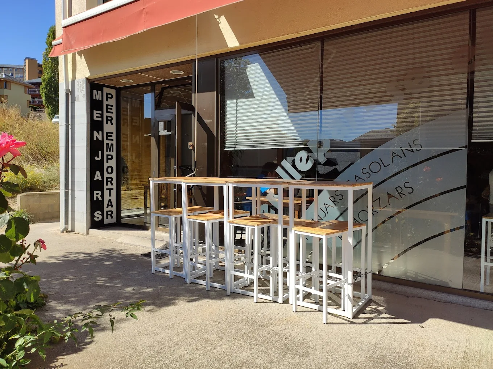
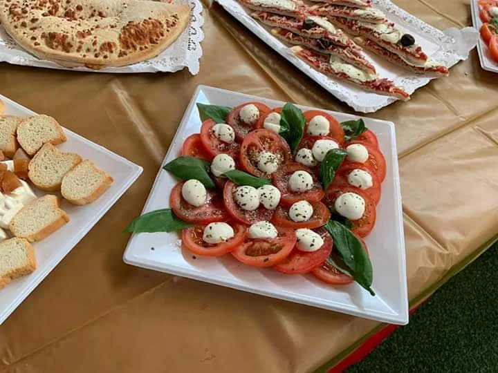

Sobre nosaltres
Al cor de la Cerdanya, cuinem cada dia com es feia abans: amb productes frescos, receptes de tota la vida i molta cura. El nostre menú canvia cada dia per portar-te el millor de la temporada. Guisos, arrossos, truites, trinxat —plats que saben a casa.

Càtering
Fem càtering per a tota mena d'esdeveniments: aniversaris, reunions d'empresa, celebracions familiars. Oferim taules d'aperitius i embotits, paelles i arrossos per a grups grans, menús complets adaptats a les teves necessitats. Ens encarreguem de tot: cuinem, portem i recollim.
Contacte
Passeig de Josep Pla
17520 Puigcerdà, Girona
Dilluns–Dissabte: 9:00–15:30
Diumenges: Tancat
4,6/5 · 27 opinions
Ressenyes
La teva opinió ens fa millors. Això és el que la gent diu de nosaltres a Google.